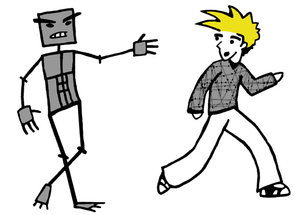

An Internet comic by Kristian Bjornard
This site is based loosely on characters created by my friend Mick Cipra in 6th grade... those being Tor, Floyd and Dr. Janet. The Characters Sven and Pork are thanks to some of my friends back home in Northfield, Paul Richardson, Sam Taylor and Chris Ho. Ghetto Stan is courtesy of Jason Abraham and the Hoben Hall third floor crew... Story line, artwork, and anything else be it characters or whatever, I thought up myself...
THANKS???